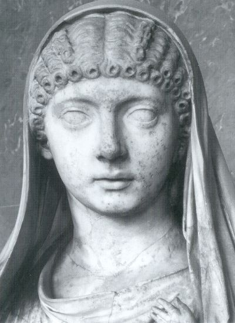

Không ai ngờ rằng Claude, một người khờ khờ và nhút nhát, sẽ làm Hoàng đế La mã. Chế độ độc tài khát máu của Tiên đế Caligula đã gây cho dân chúng biết bao nhiêu uất hận căm thù. Nhưng việc dĩ nhiên…
Thiếu trang…
…của nàng. Claude có một cô cháu gái khác tên là Juliebị Caligula đầy đi xa. Vừa lên ngôi, Claude gọi Julie về. Nhưng Messaline không bằng lòng. Biết chồng bà dễ bị phụ nữ quyễn rũ, nhất là các cô cháu gái loại Julie ( Messaline cũng chả phải là một cô cháu gái đấy ư?). Nàng liền bắt đày Julie lần thứ hai đi thật xa, cùng một lượt với nhà triết học Senèque. Ông nay bị bọn nịnh thần đâm thọc và vu khống là chống tân Hoàng đế và Hoàng hậu. Tuy nhiên, sau một thời gian ngắn,do áp lực của giới trí thức, Senèque được trả tự do và được trở về La mã. Còn Julie thì có đi không có về.
Một cháu gái thứ hai của Hoàng đế Claude, cũng tên là Julie, cũng bị Hoàng hậu Messaline tống cổ đi đến một nơi xa biền biệt, không còn hy vong trở về La mã. Hoàng đế Claude không dám hé môi phàn nàn một tiếng. Claude sợ nhất là những giấc chiêm bao hãi hùng và những điềm dữ. Từ hôn mục kích vụ Caligula bị ám sát, Claude cứ lo sợ chính mình cũng bị ám sát. Ông nằm chiêm bao thường thấy bọn sát nhân bao vây rình rập ông. Ông đâm ra nghi kỵ mọi người và mọi vật xung quanh ông. Trước khi đi ngủ, ông bắt quân lính xem xét kỹ tấm đệm, xem có ai giấu khí giới trong đó không. Bữa ăn nào ông cũng bắt tụi nấu bếp phải nếm trước các món ăn trước mắt ông.

Messaline lợi dụng tính sợ sệt và đa nghi của ông để lũng đoạn tinh thần ông và thực hiện những mưu mô thâm độc của nàng.
Nàng muốn cưỡng bách ông cụ già Appius Silanus ngủ với nàng, nhưng Silanus không chịu, vì ông chính là cha dượng của Hoàng đế Claude, nghĩa là cha chồng của nàng. Là Hoàng hậu, nàng không bằng lòng để ai cưỡng lại lệnh nàng, mặc dầu đó là cha chồng. Cho nên nàng quyết hại Silanus. Không khó gì. Nàng âm mưu với Narcisse, bí thư của Claude. Một đêm khuya, nàng đang ở trong phòng của Laude thì Narcisse gõ cửa phòng xin gặp Hoàng đế, để báo cho Hoàng đế “một tin rát quan trọng”
Cửa mở, Narcisse chạy ngay vào, nói với Claude đang nằm trên giường:
- Tâu Hoàng đế, tôi vừa nằm chiêm bao thấy Silanus ám sát ngài. Tôi sợ quá, chạy lên đây báo cho Ngài rõ để Ngài đề phòng.
Claude tái mặt, tay chân run lập cập, đồng thời Messaline giả vờ hoảng hốt nhìn Narcisse:
- Thế nào? Sao lạ thế nhỉ? Liên tiếp mấy đêm nay ta cũng nằm thấy điềm chiêm bao khủng khiếp đó. Thế là nghĩa làm sao?
Nghe cả hai người cùng lúc báo tin giống hệt nhau, Claude thất thần, liền truyền lệnh cấp tốc:
- Phải thủ tiêu Silanus nội trong đêm nay!
Thế là Silanus liền bị giết trong đêm đó. Sáng hôm sau, giữa phiên họp của Thượng nghị viện, Claude tuyên bố:
- Trẫm cảm ơn các thần dân tuyệt đối trung thành với Trẫm, lúc nào cũng lo gìn giữ tính mạng của Trẫm dù là trong lúc họ đang ngủ mê.
BAN NGÀY LÀM HOÀNG HẬU, BAN ĐÊM LÀM GÁI ĐIẾM
Nhiều đêm, Messaline cởi y phục Hoàng hậu bỏ lại giường, mặc vào y phục của phụ nữ bình dân rồi lẻn ra khỏi Cung điện. Hoàng hậu đến các nhà chứa gái điếm danh tiếng ở ngoại ô, để ngủ với khách chơi, chơi cho thỏa mãn nhục dục. Mỗi lần nàng “nhảy dù” như thế, nàng lấy tên là Lycisca và đeo nơi ngực một trái tim vàng. Khách làng chơi chỉ biết nàng là một gái điếm hạng sang, giá tiền rất đắt, chứ không biết Lycisca chính là Hoàng hậu! tạm thỏa mãn được phần nào với người khách thứ nhất, lấy tiền xong lại ngủ với người thứ hai, thứ ba cho đến ba bốn giờ sáng mới trở về Cung điện.
Nơi đây nàng phớt tỉnh, đóng lại vai trò rất khéo léo của một người vợ yêu chồng, một vị Hoàng hậu oai nghiêm, và một …bà mẹ hiền trong gia đình.
Con quỷ cái này có hai đứa con rất dễ thương: Britannicus và Octavie. Britannicus được sinh ra hai mươi ngày sau khi cha chàng là Claude lên ngôi Hoàng đế. Một chàng trai rất thông minh, nhưng không được mập mạnh lắm.
Năm 46 sau Thiên Chúa giáng sinh, nhân dịp ngày đại lễ Nhi đồng ở La mã, Britannicus phải tham gia các cuộc chơi đánh giặc của trẻ con, theo tục lệ cổ truyền của La mã, bắt chước cổ tục của Hy lạp. Tất cả con nít từ 5,6 tuổi đến 10,11 tuổi từ con vua đến con thường dân, đều phải tập luyện các môn bắn ná, cưỡi ngựa ra trận, đấu kiếm v.v…Xong các môn biểu diễn, có cuộc thi Kỵ binh trước khi bế mạc Đại hội Nhi đồng.
Cuộc thi Kỵ binh thường chia thành hai đại đội kỵ mã từ 5 đến 10 tuổi. Đội thứ nhất được giao cho Britannicus làm chỉ huy trưởng. Chỉ huy đội thứ nhì là Néron, 9 tuổi, con trai của Agrippine.
Bà Agrippine này là tình địch ghe gớm nhất của Hoàng hậu.
Ở Triều đình La mã ai cũng biết rằng Agrippine, một cô cháu gái có tham vọng nhất của Hoàng đế Claude, gọi Claude là bác ruột, vẫn thường hăm dọa rằng nàng sẽ cướp chồng và cướp cả ngôi Hoàng hậu của Messaline. Khôn khéo và nhẫn nại, Agrippine chờ hoàn cảnh thuận lợi để thực hiện tham vọng của mình. Agrippine không phải hạng gái yếu hèn như cô cháu gái Julie của Claude mà đã bị Messaline ghen đày đi xa khỏi La mã. Messaline thù Agrippine lắm, nhưng không dám làm gì chống lại nàng hoặc làm hại nàng, vì Agrippine có cả một đám quý phái có thế lực trong Triều đình làm hậu thuẫn.
Néron là đứa con của Agrippine với người chồng trước Domitius. Ngay từ thiếu thời, Néron đã là đứa con nít xấu xí, hung dữ nhưng khỏe mạnh phi thường. Lớn hơn Britannicus 4 tuổi, con trai của Agrippine mạnh bằng hai con trai của Messaline. Trong cuộc Đại hội Nhi đồng, ngoài sự tranh tài tranh sức của hai cậu bé được giao quyền chỉ huy hai đoàn kỵ mã thiếu nhi, còn có sự cạnh tranh ảnh hưởng và uy tín của hai người mẹ thù địch. Sự cạnh tranh này mới thất là ghê gớm.
Người ta đồn rằng trước ngày thi đua hai đoàn ngựa, Messaline đã thuê người lẻn vào phòng ngủ của Néron, định bóp cổ chú bé cho chết quách, nhưng có một con rồng che chở cho Néron khỏi chết và xua đuổi bọn sat nhân đi. Sách sử La mã thuật chuyện này và phê bình rằng có lẽ chỉ là một lối tuyên truyền của Agrippine để đập mạnh vào óc tưởng tượng của dân chúng: một bên là âm mưu tội ác của Messaline, một bên là đứa trẻ có thần linh che chở.
Rốt cuộc, Néron thắng vẻ vang. Chiếc xe song mã do Néron cầm cương ngựa đã chạy trước quá xa chiếc xe của Britannicus. Sự thắng lợi của Néron chính là sự thắng lợi của Agrippine.
MỘT CON QUỶ CÁI TRONG LỊCH SỬ LA MÃ.
Hai nhà sử học Juvénal và Tacite có thuật lại Messaline mê chú kép hát Mnester.
Menester nổi tiếng về các trò hề làm cho khan giả cười và được dân chúng La mã thích lắm. Messaline muốn tình tự với chàng, và chỉ muốn lấy chàng làm của riêng, không cho ai giành giựt. Nhưng anh hề không dám vì làm tình nhân của bà Hoàng hậu, lỡ Hoàng đế biết thì cứ cầm chắc là mất đầu, chứ không còn là chuyện khôi hài nữa. Nhưng Messaline quyết lấy cho bằng được chàng hề Mnester. Để cho hắn ta khỏi còn lo sợ hậu họa, Messaline bảo với Claude:
- Hoàng thượng hãy triệu kép hát Mnester vào Cung cho em hỏi chuyện.
Claude cười hỏi:
- Bộ Hoàng hậu mê nó rồi hả?
- Em đâu đã nói chuyện với hắn lần nào mà mê hắn? em muốn xem tại sao dân chúng La mã mê hắn. Hoàng thượng truyền lệnh cho hắn vào Cung
- Gấp là ngày nào, và mấy giờ mới được chứ?
- Nội ngày hôm nay
- Được rồi
- Nhưng Mnester sợ Hoàng thượng chém đầu nó. Vậy em muốn rằng Hoàng thượng gọi nó vào chầu rồi chính Hoàng thượng truyền lịnh cho nó vào Cung Hoàng hậu ngay.
Claude làm theo đúng ý muốn của Messaline. Mnester vào Cung do lệnh của Hoàng đế. Từ hôm đó, ngày nào, đêm nào Mnester cũng được vào Cung của Hoàng hậu. Messaline mê chú tình nhân kép hát đến nỗi nagf truyền lịnh phải dựng một pho tượng của chú hề nổi danh, nơi ngã tư thành phố.
Hề Mnester có một cô tình nhân thực thụ, tên là Sabina cũng nổi tiếng trong đám ăn chơi. Muốn làm hại cô này và cũng muốn nhân dịp này cưỡng đoạt luôn một gia tài đồ sộ của một người bạn thân và trung thành nhất của Claude, tên là Valerius Asiaticus. Messaline bày ra một việc hoàn toàn vu khống.
Nàng đặt chuyện nói với Claude rằng Sabina đã có chồng là Cornélius Scipion mà còn ngoại tình với Asiaticus. Vì vậy cả hai người đều phải ra tòa về tội ngoại tình và đồng lõa.
Trước vành móng ngựa, Asiaticus chỉ thở ra một câu:
- Thà chết vì chính trị của Tibère,hay vì những cơn thịnh nộ của Caius César, còn vinh dự hơn là chết vì những thủ đoạn vu khống của một người đàn bà.
Nói xong, Asiaticus bạn thân nhất và trung thành nhất của Hoàng đế Claude lấy dao cắt gân chết rất can đảm, trước mặt quan tòa.
Còn Sabina thì uất ức quá, vào trong bồn tắm của nàng mà tự vận. Thế là Messaline thanh toán được Sabina để giữ lấy chú hề Mnester làm của riêng. Gia sản kếch sù của Asiaticus cũng bị Messaline tiếm đoạt, trong số đó có cái vườn của Lucullus là tuyệt đẹp và đắt tiền hơn cả.
Messaline chuyên quyền đến tích cực, không một ai dám khuyên răn, cản trở, chống đối. Hầu hết những quan lại cao cấp, công chức, tướng tá hoặc sĩ quan hầu cận được ra vô tự do trong Triều ddnhf của Haongf đế Claude, mà có thân hình mập mạnh, dẻo dai, gân guốc, rủi ro bị Hoàng hậu ghé cặp mắt xanh tới, cặp mắt rờn rợn như mắt mèo đều lo sợ sẽ bị làm “công tác” cho Hoàng hậu để Hoàng hậu được thỏa mãn xác thịt.
Nhưng Hoàng hậu lúc nào cũng ngứa ngáy them thuồng, chẳng bao giờ được thỏa mãn cả. Sử sách chép rằng có nhiều người đàn ông tuy đẹp trai, khỏe khoắn, nhưng không đủ sức cung phụng Hoàng hậu, liền bị Haongf hậu tức giận cho uống thuốc độc chết tốt sau khi ôm ấp lăn lộn trên nệm hơi. Trong số nạn nhân “ bất lực” bị Messaline cho về chầu Diêm chúa một cách bí mât tàn nhẫn và mau lẹ, có cả hai ông Thượng nghị viện có tên tuổi nơi nghị trường: Justus Catonius và Vinius.
Thế rồi năm 47, hai tướng lãnh âm mưu nổi loạn, Scriboniacus và Viniciacus. Có một đạo quân hung hổ dưới quyền chỉ huy của nhị vị Tướng quân. Họ định ám sát Claude, rồi sẽ thanh toán luôn Messaline. Nhưng cuối cùng một số quân sĩ không tuân lệnh đó, việc âm mưu bị đổ bể, hai ông tướng phải tự tử.
Từ vụ đảo chính hụt đó, Messaline càng thi hành chính sách độc tài cực kỳ tàn bạo. Nàng khủng bố cả đám quan liêu quý phái ở Triều đình, đàn áp thẳng tay, khiến cho những kẻ nào còn muốn sống đều phải cụp xương sống trước mặt Messaline.
Tuổi càng lớn, dâm dục của nàng càng khó thỏa mãn, nàng bày đặt ra những hình phạt khủng khiếp không khác gì cá cảnh hoang đường dưới địa ngục, để cho nàng chứng kiến: quăng nạn nhân trong đống lửa đang cháy phừng phực, bắt trói chân tay của nạn nhân vào một cây trụ để cho bọn nô lệ thay nhau đánh đập toàn thân bằng đủ thứ roi: roi cá đuối, roi da thú, roi dây cói… Tội gì? Tội chống lại mệnh lệnh của Hoàng Hậu.
Cá nhà lao La mã đều vang dội đêm ngày những tiếng kêu la rên siết không thể nào tả được.
Polype, một tình nhân trung thành nhất của Messaline khuyên can nàng, liền bị nàng sai người ám sát ngay sau khi nằm với nàng trên giường, vừa bước xuống đất, ra ngoài.
Trong lịch sử nhân loại, những người đàn bà khao khát về tình dục, dù như Võ hậu của Trung quốc, Catherine II của Nga, Lucrèce Borgia của La mã cũng không thể nào so sánh kịp vớ Messaline.
Nhưng việc gì rồi cũng có một kết cuộc. Một con quỷ cái như thế cũng phải có ngày đền tội ác ghê tởm của nó. Giờ phút giải phóng của nhân dân La mã đã đến sau bao nhiêu tai họa kế tiếp do kẻ ác phụ gây ra.
Vị cứu tinh xuất hiện, là một chàng trai trẻ rất đẹp tên là Silius. Trông thấy chàng, Hoàng hậu Messaline mê tít ngay. Nàng si Silius đến nỗi sẵn sàng hy sinh tất cả những người đàn ông khác còn được nàng yêu chuộng, như chú hề Mnester. Silius đã có vợ, tên là Julia Silana. Nhưng Messaline hăm dọa, sẽ giết Silana nếu cản trở mệnh lệnh của nàng.
Silana khiếp sợ, đàng câm miệng, rút lui trong bóng tối, Messaline công khai lấy Silius, tặng cho chàng không biết bao nhiêu là vàng bạc châu báu. Ba tháng sau Messaline quyết định làm lễ thành hôn chính thức với chàng.
Trước hết, nàng tự tôn lên tước vị Augusta, Hoàng hậu Tối cao của La mã, nắm trọn quyền trị quốc. Nhưng dù sao, Hoàng đế Claude hãy còn tại vị, nàng phải đợi ngày Claude đi kinh lý miền Ostie để chủ tọa một Đại lễ Thần linh ở đấy.
Đây phải nói đến một sự ngu ngốc không thể tưởng tượng được của Claude, Hoàng đế chính thức của La mã. Việc hôn nhân giữa Messaline và Silius không phải lén lút gì. Trái lại, Messaline có cho chồng biết đàng hoàng và ông chồng Hoàng đế ấy cũng đã bóp bụng mà tán thành. Tại sao lạ vậy? Tại vì một mưu ma chước quỷ của Messaline. Biết tính Claude rất lo sợ bị ám sát, bị tai nạn, và rất mê tín dị đoan những điềm chiêm bao kinh hãi, những lời phù thủy, Hoàng hậu Messaline hăm dọa Claude:
- Em chiêm bao thấy cả thành phố La mã nổi dậy giết Hoàng đế…sợ quá, em vội vàng đi tìm thầy phù thủy và các chiêm tinh gia danh tiếng. Tất cả đều bảo em phải làm một giấy giá thú giả mạo với chàng Silius, em phải giả vờ nhận hắn làm chồng em. Hoàng đế phải tự tay ký tên chấp nhận cuộc hôn nhân đó, và đóng ấn vào giấy giá thú giả mạo đó, thì Hoàng đế mới khỏi bị ám sát và tránh được các điềm hung dữ trong chiêm bao. Hoàng đế cứ yên lòng chỉ là giấy hôn thú giả mạo thôi, em bắt buộc phải làm như thế,mong Hoàng đế vui lòng chấp thuận. Chỉ vì tính mênh của Hoàng đế đang bị lâm nguy, đang bị quỷ sứ có sừng ở Âm phủ theo phá. Nếu Hoàng đế bằng lòng như em sắp đặt thì bọn quỷ sứ tưởng Silius là Hoàng đế chồng của em, và chúng sẽ giết chết Silius, chớ không giết Hoàng đế.Đó là mưu mô bí mật giữa Hoàng đế với em để đánh lừa lũ quỷ Lcifer và Sa tăng. Có thế tính mạng của Hoàng đế mới được chu toàn.
- Còn thằng Silius thì sao? Claude ngẩn ngơ hỏi.
- Em phải phỉnh nó ký tên vào giấy giá thú với em, nó đã chịu rồi. Em giấu kín, không cho nó biết vụ chiêm bao của em, và vụ quỷ sứ Lucifer sẽ giết hại nó.Em phải mưu mô dung Silius làm con vật hy sinh để cứu tính mệnh của Hoàng đế. Ngài có hiểu em không? Có yêu em không?
- Ừ, Hoàng hậu muốn sao cũng được.
Thế là Claude nghe lời Messaline, liền hạ bút xuống ký tên vào giấy giá thú và đóng kèm ấn đỏ một bên, chấp nhận cuộc hôn nhân “chính thức” giữa Hoàng hậu Messaline,vợ ông, và chàng Silius, một thanh niên đẹp trai của La mã.
Ký xong giấy, Claude yên lòng đi Ostie, không còn sợ quỷ sứ xúi dân chúng ám sát nữa! Lịch sử thế giới từ xưa đến nay thật không có ông vua nào ngu ngốc đến thế.
Vắng Claude, Messaline liền tổ chức lễ cưới vô cùng long trọng với Silius ngay trong Cung điện Hoàng đế. Cùng những công bộc trung thành với nàng, những kẻ hầu hạ, tôi tớ, những bọn nịnh thần vì thấy Claude đần độn quá, chắc không ở ngôi được lâu nên họ bám vào Messaline. Nàng mở yến tiệc linh đình, thết đãi Triều thần có hang nghìn người tham dự, chúc mừng, y như đám cưới thật của Hoàng hậu. Thôi thì ăn uống say sưa, tưng bừng hoan lạc, đàn ca nhẩy múa nhộn cả kinh đô. Nàng còn có ý định sẽ tôn Silius lên ngôi Hoàng đế, sau khi tìm cách thủ tiêu Claude.
Nhưng một nhóm người trung thành với Claude quyết định đi gặp Vua, nói cho biết rõ hết câu chuyện để Vua nghe và bàn việc ám hại Messaline. Ba người hăng hái đi tìm Hoàng đế là Narcisse, Caltitus, và Pallas. Nói chiyeenj đám cưới cho vua nghe, Vua bảo:
- Chuyện Hoàng hậu làm, Trẫm đã biết rồi, Trẫm đã bằng lòng ký giấy chấp nhận cuộc hôn nhân, vì đó là giấy giả mạo để đánh lừa bọn quỷ Satan muốn ám hại Trẫm đó thôi.
Nghe Hoàng đế nói, ba nhà mưu sĩ bật ngửa ra. Caltistus và Pallas thấy việc âm mưu bại lộ, liền rút lui, để khỏi bị Messaline lấy đầu. Nhưng Narcisse quyết hành động một mình.
Theo đúng kế hoạch đã định, ông có thuê hai con điếm và dắt theo với ông, Calpurnie và Cléopatre. Hai ả chạy đến níu áo Hoàng đế, la hét ầm ĩ bảo Hoàng đế đã làm hai ả có thai. Claude tái mặt, chưa hiểu chuyện chi nhưng đã run cầm cập. Ông chỉ sợ các quan và dân chúng đòi truất ngôi vì hành động bỉ ổi kia, dù là chuyện hoàn toàn vu khống.
Nhưng Narcisse giả vờ can thiệp. Ông đánh hai co điếm nói láo và tâu cho Hoàng đế biết tất cả mưu mẹo của Hoàng hậu, và chính hai con điếm này cũng là mưu của Hoàng hậu muốn làm nhục Hoàng đế, để Hoàng đế bị truất ngôi, Hoàng hậu sẽ lên kế vị và sẽ tôn Silius lên ngai vàng.
Claude tức giận quá, nghe lời Narcisse quyết đem quân sĩ trở về La mã gấp rút để trừng phạt Messaline và bè lũ nịnh thần đồng lõa với nàng.
Trong khi đó, ở Kinh đô, Messaline đang say sưa yến tiệc với người yêu…Bỗng tin Claude hồi kinh. Ai nấy sợ hãi vội vàng chạy toán loạn hết. Nhưng đám lính hộ vệ của Hoàng đế phi ngựa về trước đã ùa vào thành, chặn bắt tất cả những người dự tiệc.
Silius bị tử hình tức khắc. Những ai từ trước đến giờ đã liên lạc với Messaline, có cảm tình với Messaline đều bị giết hết. Traulus Montanus, một cậu thanh niên đẹp trai, bị Messaline bắt đem vào ngủ một đêm, bây giờ có người khai ra, cũng bị chém đầu.
Sau khi chứng kiến cuộc đền nợ máu của hang trăm người trong giây phút, Claude vào trong phòng tiệc ăn uống ngon lành, phớt tỉnh. Narcisse hỏi:
- Tâu Hoàng thượng, còn Messaline thì sao?
- Để mai hãy hay.
Narcisse biết tính sợ vợ ngu ngốc của Hoàng đế. Nếu để đêm nay Messaline năn nỉ ỉ ôi với chồng, thì thế nào Claude cũng nghe lời nàng và chắc chắn sáng mai Narcisse sẽ mất đầu. Biết trước như vậy, ông làm thinh bỏ ra ngoài. Gặp một chú lính hộ vệ trung thành của Vua, ông bảo:
- Tụi mày vào phòng của Messaline, giết nó ngay bây giờ. Không được trễ môt phút! Lịnh của Hoàng đế!
Messaline đã trốn ra vườn của Lucullus, nằm lăn xuống đất. Mẹ nàng Lepida, ngồi cạnh khuyên nàng nên tự tử. Bốn người lính hộ vệ đang đi kiếm nàng, chưa kịp đâm thì nàng đã lấy dao găm tự thọc vào cổ họng. Máu phọt ra đỏ lòm.
Claude đang ngồi ăn. Lính chạy vào báo tin:
- Tâu Hoàng đế, Messaline đã tắt thở!
Claude không nói một câu. Phớt tỉnh ngồi ăn, no nê xong, ông bảo viên quan hầu:
- Cho Trẫm một ly nước uống.